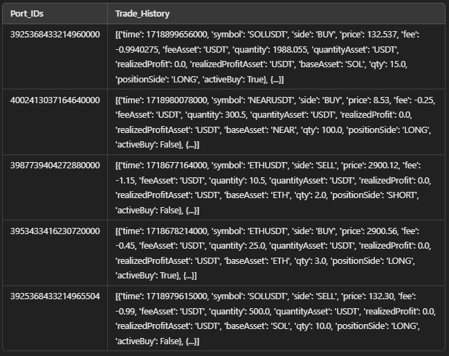

This project involves analyzing trade data to evaluate the financial performance of trading portfolios. The dataset contains the trade history of multiple accounts and is processed to calculate key metrics like Profit and Loss (PnL), Return on Investment (ROI), Sharpe Ratio, and Maximum Drawdown (MDD). Key challenges in working with this data include:
Data Columns:
- Trade_History: Contains trade details in a string format that needs to be parsed into a structured list.
- Port_IDs: Identifies each trading account or portfolio.
- Quantity: Represents the number of assets traded.
- Price: The price at which the asset was traded.
- RealizedProfit: Reflects the profit or loss from the trade after execution.
Challenges and Insights:
- Trade_History Parsing: Parsing the 'Trade_History' column using
ast.literal_eval()to handle string-encoded lists. - Missing Data Handling: Dropping rows with missing or invalid trade data to ensure the analysis remains accurate.
- Account-Level Grouping: Grouping trades by
Port_IDsto calculate portfolio-level metrics. - Data Flattening: Converting trade data into a structured form, making it easier to analyze individual trades while maintaining their relationship to portfolios.
Key Metrics for Analysis:
- Realized Profit (PnL): Profit or loss from each trade.
- Quantity and Price: Used to calculate the investment made for each trade and ROI.
- Cumulative Profit: Running total of profits for each account, useful for calculating Maximum Drawdown (MDD).
This approach allows us to analyze the overall performance of trading portfolios across multiple key metrics, providing valuable insights into their effectiveness.
Click below to view the project results and see how the rankings are calculated based on these metrics:
View Data File